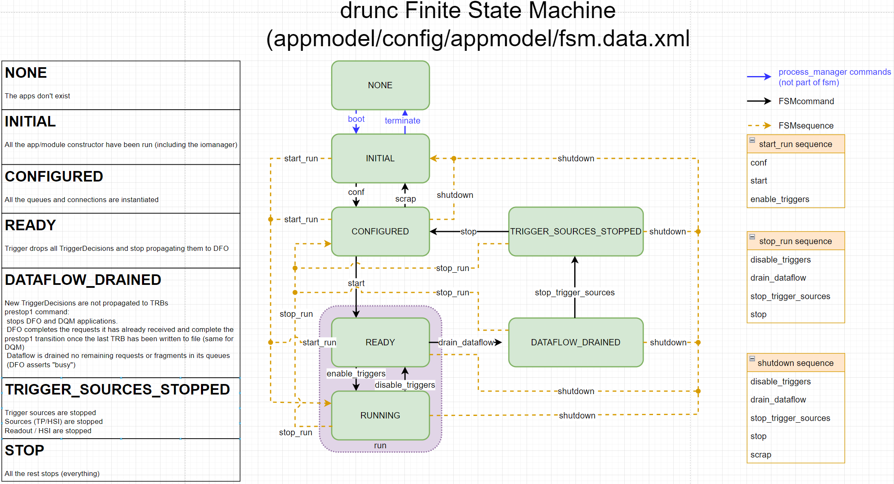

FSM
Schematic
The FSM operates the DAQ infrastructure. The FSM is configurable, so technically this schema is a special case of a configuration... But if you are here, you probably want to use the DAQ.

Each transition (black arrow) is translated to a drunc-controller-shell or drunc-unified-shell command defined, what they do is describe later. States are in the green boxes, each drunc-controller should be in one of these states. Batch of transitions can be run as sequences (yellow dotted lines) which execute a series of transitions (although they are not working anymore...)
Before and after certain transitions, there are actions that are associated with certain transitions.
Common configurations
Three configurations are currently available, they are defined in in this file:
* fsmConf-test
* This configuration is for test setup anywhere. With this configuration, you get:
* Asked by the run control for a run number (user-provided-run-number action) when you start: you need to provide --run-number 1234. You can also specify to --disable-data-storage, the --trigger-rate and whether the run is "PROD" or "TEST" with --run-type.
* A simple thread pinning example running before and after conf, and after start.
* A "consolidated" configuration saved in PWD with the run number in its filename.
* A logbook.txt that doesn't say much beyond who started the run, the run number and time, and any message you leave at start.
* fsmConf-prod
* This configuration is for setup at EHN1. You need to have a ~/.drunc.json that specifies endpoints of ELisA, the run registry and the run number. With this configuration, you get:
* The CERN run number service to specify the run number when you start. You can also specify to --disable-data-storage, the --trigger-rate and whether the run is "PROD" or "TEST" with --run-type.
* A simple thread pinning example running before and after conf, and after start.
* A "consolidated" configuration saved in the run registry.
* An entry in the ELisA logbook that doesn't say much beyond who started the run, the run number and time, and any message you leave at start.
* FSMConfiguration_noAction
* This configuration is used by subsystem controller only. You don't really need to worry about it, but need to setup your ru-controller, trg-controller, hsi-controller and df-controller with this one.
States
none- apps have not been bootedinitial- app constructors have been ranconfigured- queues and connections have been initializedready- TPs are being generated, but dropped at the DFOrunning- TPs are being generated and stored to diskdataflow_drained- TPs are being generated, but not propagated to the TRBs. DFO and DQM aplications stopped. Requests and fragments drained from queuestrigger_sources_stopped- TPs are no longer being generated. HSI, sources, and readout fully stopped.
Transitions
These are the black arrows defined in the diagram above. They are:
| Transition name | Corresponding drunc command |
Note |
|---|---|---|
(same with .replace("_","-").lower() |
||
conf |
conf |
configure the apps by ingesting the parameters from the configuration file |
start |
start |
start a run, allocating a run number. Initializes queues and connections |
enable_triggers |
enable-triggers |
start generating TPs, TDs are not propagated to the DFO |
disable_triggers |
disable-triggers |
stop collecting generated TPs to file |
drain_dataflow |
drain-dataflow |
stop propagating TDs to the TRBs |
stop_trigger_sources |
stop-trigger-sources |
stop generating TPs |
stop |
stop |
stop the rest of the apps |
scrap |
scrap |
basically no op (PL thinks?), intended to remove all the configuration parameters from the applications |
Actions
The actions are defined in drunc (for now), but drunc decides to use them according to the FSM configuration, so they are listed here according the configurations that use them:
* fsmConf-test
* user-provided-run-number - the user provides the run number.
* file-run-registry - saves a consolidated configuration in PWD.
* file-logbook - generates a logbook as a file in the directory from which drunc was spawned. Takes the file name as an argument.
* thread-pinning - has a pre-conf, post-conf, and post-start variable. Contains the file with the thread pinning configuration to attach specific processes to specific threads.
* fsmConf-prod
* usvc-provided-run-number - microservice (usvc) generates the run number.
* db-run-registry - saves a consolidated configuration on the run registry.
* usvc-elisa-logbook - pushes an entry to the ELisA logbook (instructions)
* thread-pinning - has a pre-conf, post-conf, and post-start variable. Contains the file with the thread pinning configuration to attach specific processes to specific threads.
* FSMConfiguration_noAction
* As expected, contains no action.
Transitions with pre- and post- sequences
The listings provide the actions in the order of execution. Any actions presented with parentheses e.g. (file-logbook) are optional.
start-prod
pre-usvc-provided-run-numberanddb-run-registrypost- (file-logbook),thread-pinning, andelisa-logbook
start-test
pre-usvc-provided-run-numberandfile-run-registrypost- (file-logbook) andthread-pinning
conf
pre-thread-pinningpost-thread-pinning
drain_dataflow-prod
post- (db-run-registry), (file-logbook), (elisa-logbook)
drain_dataflow-test
post- (file-logbook)
Sequences
Are not supported yet. You can ignore the rest of this document.
These define a sequence of transitions pregrouped. These are executed in the order that they are presented in. They are currently only defined on the client side. They are executed as normal FSM transitions. The existing sequences are in yellow in the diagram at the top of the screen. The sequences are
* start_run - executes conf, start, and enable_triggers
* stop_run - executes disable_triggers, drain_dataflow, stop_trigger_sources, and stop
* shutdown - executes disable_triggers, drain_dataflow, stop_trigger_sources, stop, and scrap